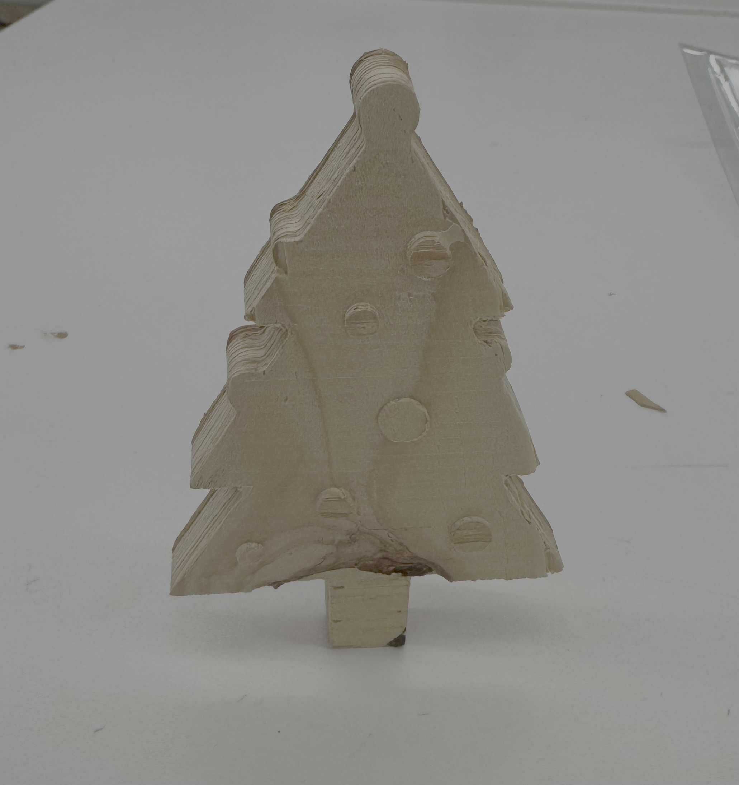
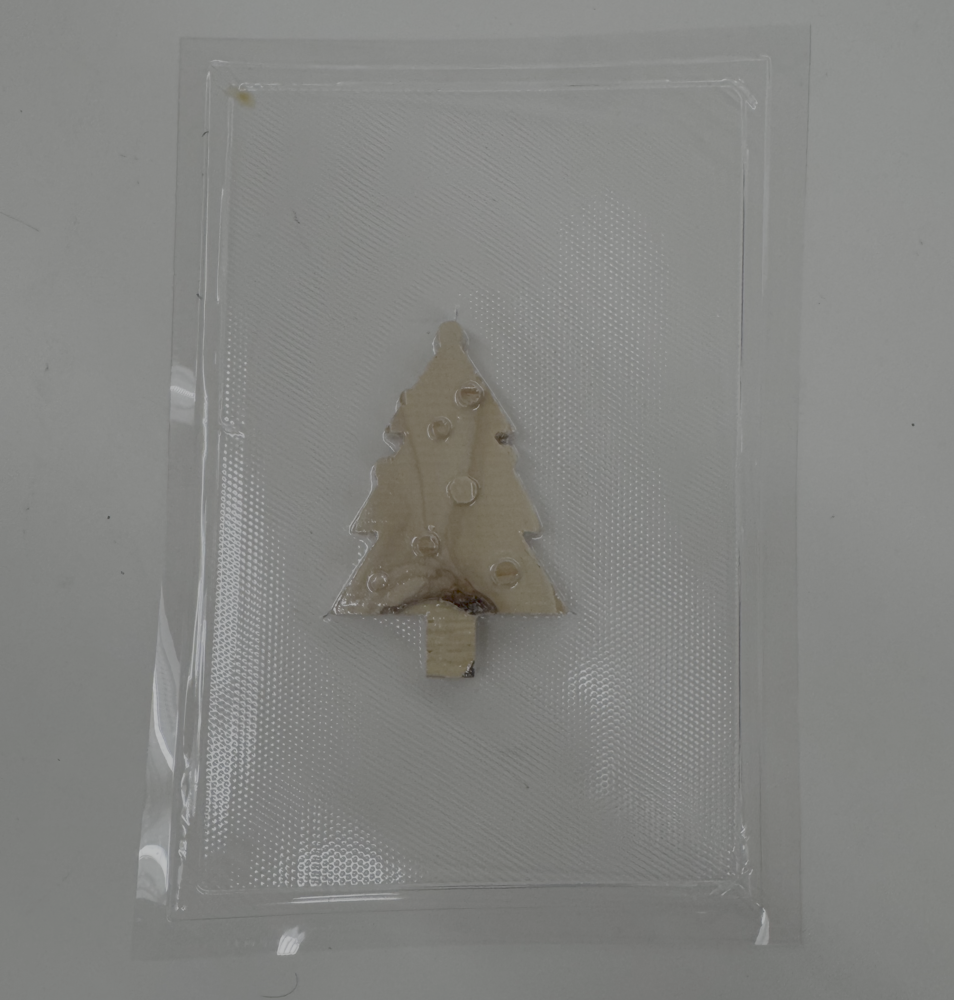
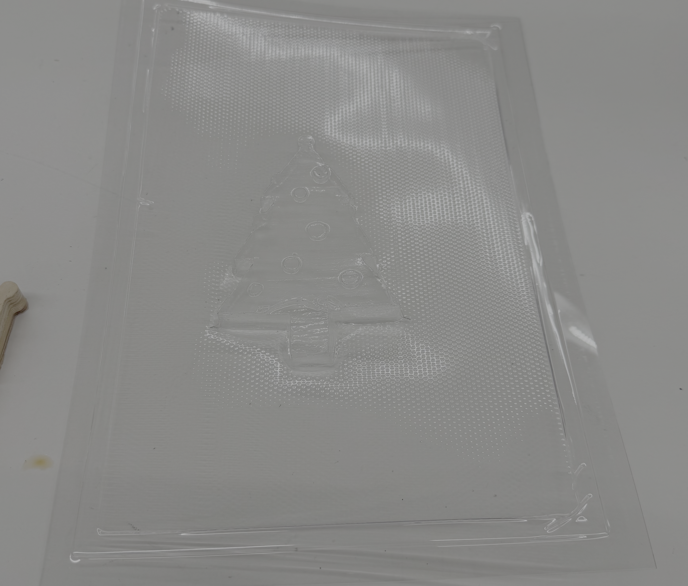
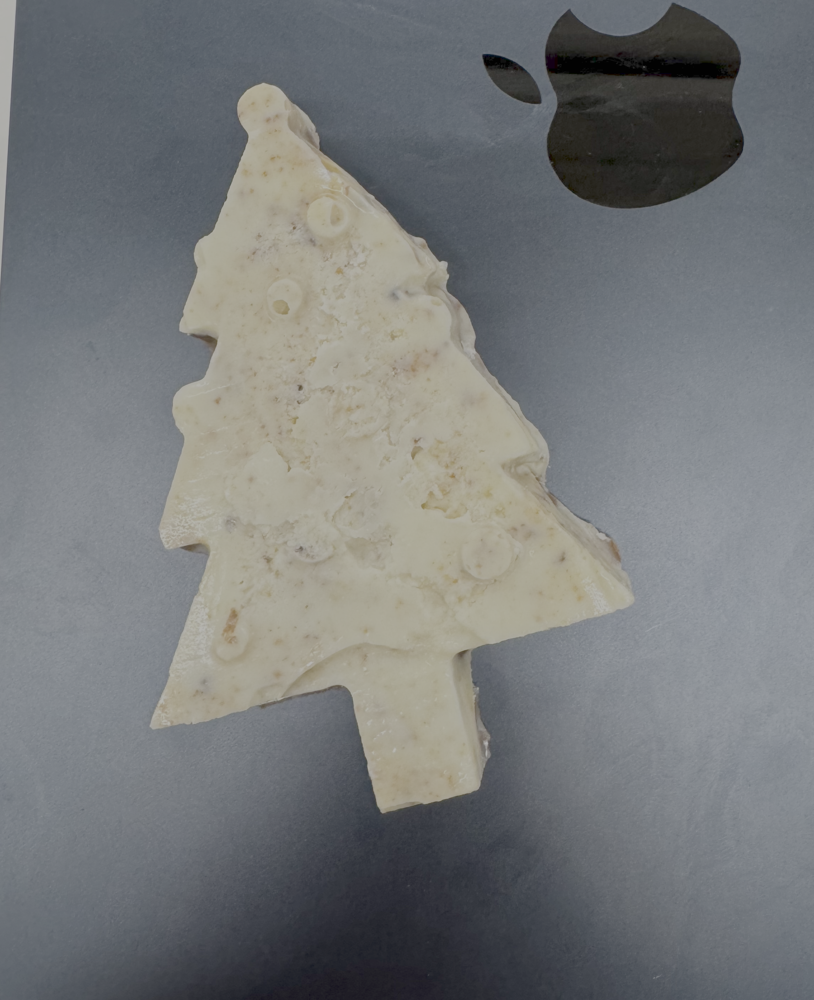
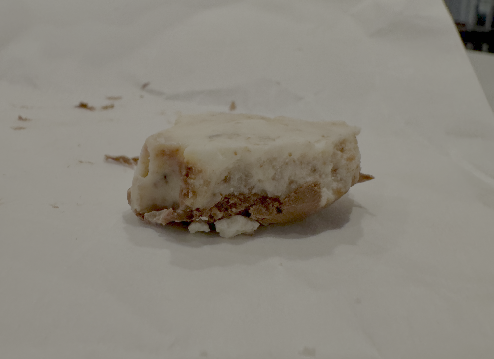

<div class="textcontainer">
<p class="margin"> </p>
<h3>Week 8: CNC Milling</h3>
<h4 style="color:black;" >Chocolate Christmas Tree</h4>
<p style="color:black; font-size:18px;">
For this weeks assingment I modeled a simple 3D object in fusion, vacumed sealed it to form a mold, and then filled it with chocolate. My object was a christmas tree. I started by just outlining the tree shape with lines and then drawing on some circles as ornaments. I extruded them out to different heights to create a trunk, tree, and then a bunch of different sized ornaments. I then projected my 3d model onto a sketch and exported that sketch to fusion.
</p>
<p class="margin"> </p>
<div class="flexrow">
<a id="btn" href="christmastree.f3d" download> View Fusion File</a>
<a id="btn" href="treeprojection.dxf" download> View Fusion File</a>
</div>
<p class="margin"> </p>
<p style="color:black; font-size:18px;">
The actual CNC cutout was ok, most of the detail came throught, but given that it was cheap plywood, there were some chips on some of the ornaments. Overall, however, I was happy with the wooden version. For post processing I vacumed sealed my cut out to create a plastic mold. This worked very well, the vacume sealer captured every detail on the model and was fairly sturdy.
</p>
<div style="display: flex; gap: 10px;">
<p></p>
<p></p>
<p></p>
</div>
<p style="color:black; font-size:18px;">
I then melted down some chocolate in the microwave and filled my mold. I didn't want to just fill it with one basic type of chocolate, instead I wanted to create a higher quality product focused on taste, not just presentation. I started by slightly burning some white chocolate, this adds a slight crunch and slightly burnt flavor that works really well once mixed in with normal metled white chocolate. This burntness compliments the sugar of the white chocolate very well, but at this point it was still sweet for my liking. I decided that a dark chocolate bottom layer would provide a nice finish by both adding some visual contrast, but also a by counteracting the sweetness of the white chocolate.
<br>
Overall, flavor wise, I dont think the final product could have come out better. I had it reviewed by various people who all noted different apsects. One was very enthusiastic about the christmas tree shape, another was impressed by the layering, and another expressed their surprise and happiness at the sliglty burnt pieces mixed in.
</p>
<div style="display:flex; gap:10px;">
<p></p>
<p></p>
</div>
</div>